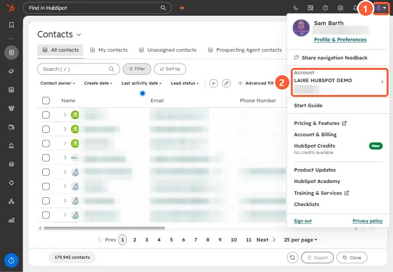

Short answer
Click your avatar in the top right of HubSpot. Under Account, the number below the account name is your portal ID, which HubSpot also calls the Hub ID or account ID. It is also in every HubSpot URL right after the tool name, in your tracking code file name, and in the API's account details. It identifies the account but does not grant access, so it is safe to share with support or a partner.
1. In the account menu
Click your avatar or account name in the top right corner (1). The menu shows your user details first, then an Account section with the account name and, right under it, the portal ID (2).


If you belong to several accounts, the arrow next to the account name switches between them, and each shows its own ID. See account settings for managing several accounts.
2. In any HubSpot URL
Every page in HubSpot has the portal ID in its address, right after the tool name:
https://app.hubspot.com/contacts/12345678/objects/0-1/views/all/list
https://app-eu1.hubspot.com/workflows/12345678
https://app-na2.hubspot.com/settings/12345678/usersThe start of the address changes with the data center your account is hosted in (app, app-na2, app-eu1), but the ID is in the same place. Paste any HubSpot URL or the ID into the HubSpot link builder to get direct links to workflows, properties, imports and settings in your account.
3. In your tracking code
The HubSpot tracking code loads a script named after your portal ID:
<script id="hs-script-loader" async defer src="//js.hs-scripts.com/12345678.js"></script>Accounts in other data centers use a matching host; my demo portal in na2 loads from js-na2.hs-scripts.com. If you need to know which account a website reports to, view the page source and read the number in that file name. See installing the tracking code.
4. Through the API
The account info endpoint returns the ID and the account's hosting details. I called both versions on November 15, 2026:
GET https://api.hubapi.com/account-info/2026-09/details
{
"portalId": 12345678,
"accountType": "STANDARD",
"timeZone": "US/Eastern",
"uiDomain": "app-na2.hubspot.com",
"dataHostingLocation": "na2",
...
}- Both
/account-info/v3/detailsand/account-info/2026-09/detailsanswered with a 200. - The
2026-09response also includedportalNameandcreatedAt, which the v3 response did not. accountTypeisSTANDARD,DEVELOPER_TEST,SANDBOXorAPP_DEVELOPER(a legacy developer account), so a script can tell a sandbox from production. My demo portal returnedDEVELOPER_TEST.uiDomainanddataHostingLocationtell a script which data center the account is in.
Any valid service key or app token works. See service keys.
5. What you need it for
- Support tickets and partners. It is the fastest way to say exactly which account you mean, especially when a production account and a sandbox share a name.
- Single sign-on. HubSpot's SSO setup asks for it in the identity provider's Portal Id field.
- Developer tools. The HubSpot CLI and many integrations ask for it when you connect an account.
Is it a secret? No. It is in your tracking code and page URLs. It identifies the account but does not grant access. Keys and tokens are what you keep private.
6. What is changing for 2027
- Data centers vary. Accounts are hosted in different locations such as na1, na2 and eu1, so scripts should read
uiDomainfrom the account info API instead of assumingapp.hubspot.com. - Dated API versions. The
2026-09account details return more fields than v3. Use the dated URL in new code. See API versioning.
Common questions
Is the Hub ID the same as the portal ID?
Yes. HubSpot uses portal ID, Hub ID and account ID for the same number.
How do I tell which HubSpot account a website uses?
View the page source and find hs-scripts.com/NUMBER.js. The number is the portal ID.
Can someone access my account with my portal ID?
No. It identifies the account only. Access needs a login, a key or an app token.
Why does my URL say app-na2 instead of app?
Your account is hosted in a different data center. The portal ID is in the same position either way.